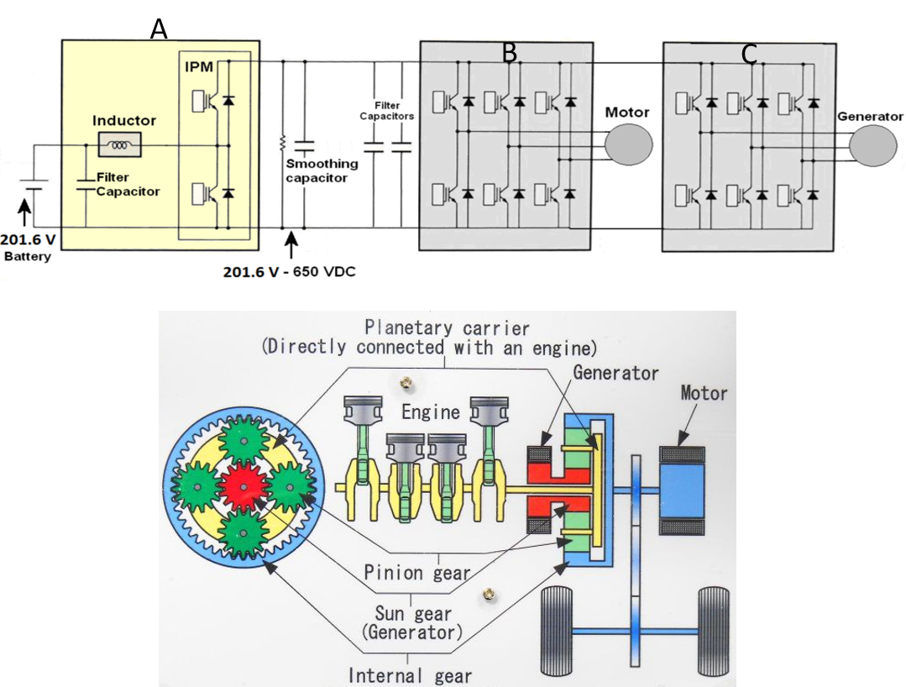
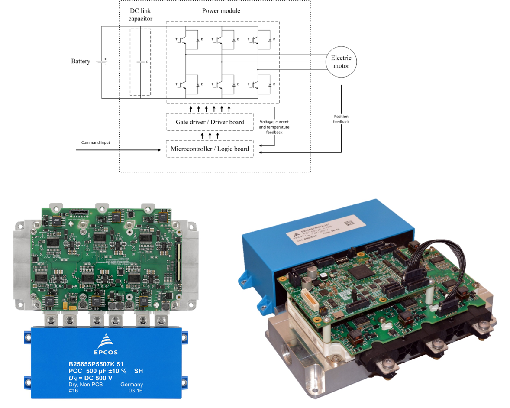

Convertisseurs statiques : panorama#
Principe de la commutation#
La modulation de puissance par commutation est une technique utilisée en électronique de puissance pour convertir et réguler l’énergie électrique en activant et désactivant rapidement des interrupteurs électroniques (comme des transistors ou des thyristors). Cette méthode permet de contrôler efficacement la tension, le courant et la puissance en minimisant les pertes par conduction et commutation, car les interrupteurs fonctionnent majoritairement en mode bloqué ou saturé (faibles pertes). Comparée aux régulations linéaires, elle améliore considérablement l’efficacité énergétique et permet une densité de puissance plus élevée grâce à des composants plus compacts et à des fréquences de commutation élevées, réduisant la taille des filtres et des composants magnétiques associés.
Cellule de commutation

Principe de fonctionnement
La cellule de commutation est le circuit de base en électronique de puissance constitué de deux interrupteurs, généralement un transistor et une diode, souvent associés à des éléments de stockage d’énergie comme une inductance ou un condensateur. Son rôle est d’alterner entre des états de conduction et de blocage, permettant ainsi de transférer de l’énergie entre des sources (entrée/sortie). La cellule de commutation doit respecter les règles suivantes:
si connectés à une source de tension (par exemple un condensateur), les 2 interrupeturs ne pourront être fermés en même temps sous peine de créer un court-circuit et de détériorer le matériel.
de même si la cellule est connectée à une source de courant (par exemple une inductance), il n’est pas possible d’ouvrir les deux interrupteurs en même temps sous peine d’avoir une surtension egalement destructrice.
Principaux types de convertisseurs#
Les véhicules électriques utilisent plusieurs types de convertisseurs pour gérer l’énergie électrique :
Convertisseur DC-DC : Abaisse ou élève la tension entre la batterie de forte puissance et les systèmes basse tension (12V) pour alimenter les accessoires (éclairage, électronique) ou le bus continu de motorisation.
Onduleur DC-AC : Convertit le courant continu de la batterie en courant alternatif pour alimenter le moteur électrique. Lors du freinage, il récupère l’énergie cinétique en la convertissant en énergie électrique pour recharger la batterie.
Convertisseur AC-DC : Présent dans le chargeur embarqué, il transforme le courant alternatif du réseau en courant continu pour recharger la batterie. Les structures de chargeurs peuvent être variées.
Principaux convertisseurs statiques d’une PRIUS 
Question: Identifier les convertisseurs A, B et C.
Modules de puissance#
L’onduleur d’une voiture électrique est un dispositif clé permettant de convertir la tension continue de la batterie en tension alternative pour alimenter le moteur. Sa composition technologique se fait à partir de modules techologiques fortement intégrés :
Modules de puissance IGBT (Insulated Gate Bipolar Transistor) : Ces composants servent d’interrupteurs rapides, permettant de moduler la tension continue en créant une tension alternative grâce à une technique de modulation de largeur d’impulsion (PWM). Chaque module contient plusieurs IGBT intégrés avec leurs diodes de roue libre.
Drivers de commande : Ces circuits contrôlent l’ouverture et la fermeture des IGBT en appliquant des signaux précis à leurs grilles. Ils assurent également une isolation électrique entre le circuit de commande et le circuit de puissance, souvent via des optocoupleurs ou des transformateurs.
Condensateurs : Positionnés en amont du circuit, ils servent de filtre pour lisser la tension continue de la batterie, réduire les ondulations et limiter les variations de courant dans les modules IGBT, augmentant leur fiabilité.
Ces composants sont intégrés sur une carte de puissance, souvent refroidie par un système thermique (air ou liquide) pour dissiper la chaleur générée, et contrôlés par une unité centrale qui adapte la fréquence et l’amplitude de la tension alternative en fonction des besoins du moteur.
Exemple d’onduleur de forte puissance [Nordelof, 2019] [EPCOS] [INFINEON] 
Question: Identifier sur les photos les briques technologiques constituant l’onduleur.
Références#
[Nordelof, 2019] Nordelöf, A., Alatalo, M., & Söderman, M. L. (2019). A scalable life cycle inventory of an automotive power electronic inverter unit—part I: design and composition. The International Journal of Life Cycle Assessment, 24, 78-92. Link